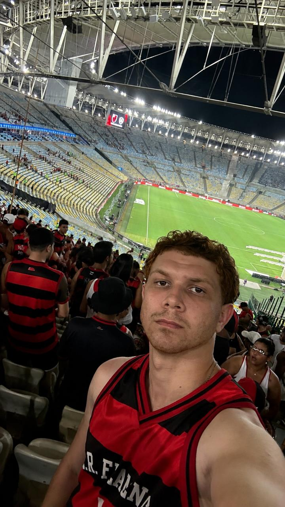

Sobre mim

E aí! Meu nome é João Eduardo, tenho 20 anos, moro na Baixada
Fluminense e sou estudante de Engenharia de Software pela UniCesumar.
Atualmente,trabalho como jovem aprendiz no setor administrativo de
Segurança do Trabalho, junto com cinco técnicos e um engenheiro da
área. Essa é minha primeira experiência formal dentro de uma indústria
e, até o momento, estou muito satisfeito e grato por tudo que venho
aprendendo. Mas essa não é minha primeira experiência de trabalho,
não! Já fui ajudante de obras, garçom, entregador, balconista em um
depósito de bebidas e auxiliar de mecânico.
Sou formado como técnico em Informática pela FAETEC e também concluí
recentemente o curso de Mecânica de Veículos Leves pelo SENAI. A
mecânica tem sido meu segundo caminho profissional, e venho
trabalhando aos finais de semana na oficina com meu tio, tanto para
adquirir experiência quanto para juntar uma grana. KKKK.
Fora do trabalho e dos estudos, também tenho minhas paixões.
Atualmente, namoro a garota mais linda, perfeita, cheirosa, de pavio
curto (KKKK) e mais doce que eu poderia conhecer. A gente se vê aos
finais de semana e, sempre que consegue conciliar os compromissos, dá
um jeito de se encontrar durante a semana também.
Sou praticante de musculação, apaixonado por música e flamenguista de
coração — paixão que herdei do meu pai, que também ama as cores
rubro-negras. Ah, já ia me esquecendo! Também faço trilhas com um
grupo de amigos, que já me proporcionou experiências incríveis. Entre
elas, estão a Pedra da Gávea, as cachoeiras de Guapimirim e o cume da
Pedra do Gavião. Lugares incríveis que tive o prazer de conhecer e que
me fizeram perceber o quanto ainda existe por aí para explorar.
Sobre o futuro, meu objetivo profissional é me tornar engenheiro de
software e ter minha própria empresa, trabalhando com aplicações web,
desenvolvimento de sistemas e análise de dados. Também sonho em ter
uma casa bacana e um carro dahora. Mas, na real, meu sonho vai muito
além disso: quero dar uma vida boa para minha futura família, garantir
que meus filhos não passem vontade e permitir que minha mãe possa
parar de trabalhar e aproveitar mais a vida.
Quero aproveitar o vento na cara, sentir o frio dos montes mais altos,
conhecer os sete mares, descobrir os quatro cantos do mundo e
desfrutar de tudo de bom que essa terra tem a oferecer enquanto eu
tiver a oportunidade.
Então, na real, acho que é isso. Eu só quero viver, sentir a vida
acontecendo em mim e, no fim das contas, construir uma linda família
que esteja sempre ao alcance dos meus braços.